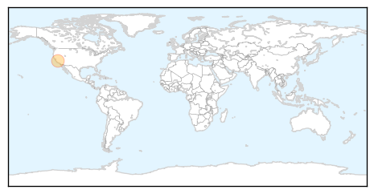
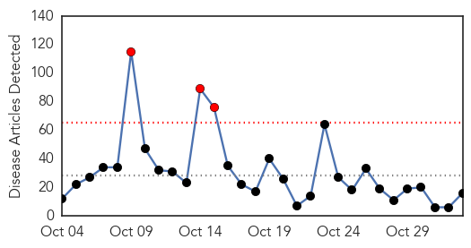
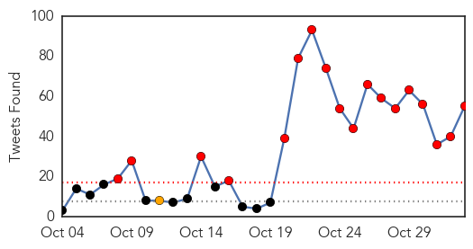
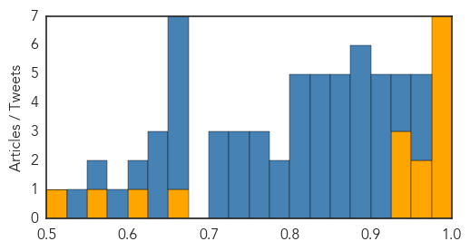

West Nile Virus
30-Day Web Trend
30-Day Twitter Trend
0 alerts, 0 warnings

Article Locations

Article Confidences

Top Articles:
Top Tweets:
-
No tweets found for Nov 02, 2015
Ebola
30-Day Web Trend
3 alerts, 0 warnings

30-Day Twitter Trend
18 alerts, 1 warnings

Article Locations

Article Confidences
Top Articles:
- 1.000
- Two US states to quarantine health workers returning from Ebola zones
- 0.999
- Ebola scare: Mali nurse faces stones from neighbors
- 0.997
- Long Island News from the Long Island Press
- 0.996
- Obama addresses West Africans on facts about Ebola
- 0.993
- IPK Discusses MERS/Ebola Research Status and Korea's Response Strategies against Infectious Diseases
- 0.991
- New Research Explores How the Ebola Scare Stigmatized African Immigrants in the United States
- 0.980
- Suspected Ebola Infected Man Has Malaria and He Lied To The Authorities
- 0.970
- Dozens of Sierra Leonean Medical Experts trained on Disease Control and Prevention in China
- 0.960
- World Foog Programme Providing Food To Ebola Treatment Centers In Liberia
- 0.950
- How Sierra Leone fought Ebola with Prophet TB Joshua's 'anointing water'
- 0.949
- Building on Sierra Leone’s Health Sector-Engaging China
- 0.948
- Johns Hopkins And DuPont Join Forces To Produce An Improved Ebola Protection Suit
- 0.673
- Africa Information
- 0.611
- I Will Fight Ebola Until The Last Day…. Say Rtd. Brig. Maada Bio In Kenema
- 0.553
- “I will fight Ebola until the last day” – says Bio in Kenema
- 0.515
- Georgetown's Lawrence Gostin honored for Lifetime Achievement in Public Health Law
Top Tweets:
- 0.971
- Teenage Pregnancies rose in Sierra Leone during Ebola outbreak - https://t.co/TbHjiN9s0i ebola
- 0.958
- Ebola Virus Clinical Trials Underway - https://t.co/qnykYNyzuE ebola
- 0.952
- Study Blocks Ebola Virus Budding By Regulating Calcium Signalling - https://t.co/H4HDRXI3Ho ebola
- 0.944
- Response to Ebola was 'not as expected' - Sierra Leone President - https://t.co/972LO1JQ1R ebola
- 0.931
- Age and EBOLA viral load correlate with mortality and survival time in 288 Ebola virus disease patients https://t.co/NuPmsyZ0Iy
- 0.918
- Ebola clinics take on new roles in West Africa - Vaccine News Daily https://t.co/vtSmoLkIGE ebola EVD
- 0.913
- IPK Discusses MERS/Ebola Research Status and Korea's Response Strategies against Infectious ... - https://t.co/ST7pQ4PWrt ebola
- 0.909
- BreakingNews 2/11/15 - How Sierra Leone Fought Ebola With TB Joshua's 'Anointing Water' - https://t.co/3eHmfeJLOL ebola
- 0.907
- Ebola vaccines in development but not fully tested for safety/effectiveness. Vaccine trials ongoing in Liberia & Sierra Leone
- 0.900
- Analysis suggests Liberia Ebola cases higher than thought - CIDRAP https://t.co/anKjehDoSr ebola EVD
- 0.894
- Analysis suggests Liberia Ebola cases higher than thought - https://t.co/damLZGC1su ebola
- 0.893
- Penn Study Blocks Ebola Virus Budding by Regulating Stem Cell Signaling - https://t.co/XwSZeSqZf2 ebola
- 0.887
- Penn Study Blocks Ebola Virus Budding by Regulating Stem Cell Signaling - Drug Discovery & Development https://t.co/nX6yrfpsYt ebola EVD
- 0.881
- RT: Ebola in its final week in SierraLeone ceteris paribus as WHO poised to declare END OF EBOLA in the country on 7 Novem…
- 0.877
- Virion-associated phosphatidylethanolamine promotes TIM1-mediated infection by Ebola dengue ... - https://t.co/ZpnUYtZs8T ebola
- 0.876
- Improving Burial Practices and Cemetery Management During an Ebola Virus Disease Epidemic — Sierra Leone 2015 https://t.co/A76vELXGXM
- 0.868
- Ebola Zombies FULLMOVIE - https://t.co/1LVM20EUcS ebola
- 0.868
- Ebola Powerpoint - https://t.co/CLuxoMuDWk ebola
- 0.868
- Ebola - https://t.co/Kgq9dSRemN ebola
- 0.863
- Scottish Nurse Pauline Cafferkey Previously Diagnosed With Ebola Shows Disease ... - Korea Portal ... https://t.co/bYPc68kBGK ebola EVD
- 0.856
- Ebola clinics take on new roles in West Africa - https://t.co/bqghO83LFx ebola
- 0.838
- IPK Discusses MERS/Ebola Research Status and Korea's Response Strategies ... - Business Wire (pres... https://t.co/tVHdYdGCh8 ebola EVD
- 0.833
- Guinea: Newborn tests positive for Ebola despite healthy parents - https://t.co/icjymDsPy3 ebola
- 0.833
- Guinea: Newborn Tests Positive For Ebola Despite Healthy Parents - https://t.co/KqATn9EUNo ebola
- 0.833
- Autism spectrum disorder definition cdc ebola update - https://t.co/nLddB5Pkm7 ebola
- 0.831
- The aftermath of the Ebola epidemic - https://t.co/kw7ELjeFXu ebola
- 0.823
- Scottish Nurse Pauline Cafferkey Previously Diagnosed With Ebola Shows Disease-Related ... - https://t.co/5au0wASMgD ebola
- 0.821
- survivor - Ebola - https://t.co/4wSDjfWEDK ebola
- 0.816
- L Kano - Ebola Flow (Feat. Boogie ) - https://t.co/NLhpfl080K ebola
- 0.803
- 2015 BEP-CRDF Global small Grants for Improved Ebola Outbreak Coordination and Response in ... - https://t.co/JBEHzhSiQG ebola
- 0.801
- 'It was my calling' says S'pore nurse who joined fight against Ebola in Africa - https://t.co/MyVuw54Mwz ebola
- 0.780
- Ira Longini and WHO team lead breakthrough Ebola vaccine trial - https://t.co/Qmm7pKjRF7 ebola
- 0.776
- Wellness Advocate's Adoption Journey helps Ebola Infected Areas of Liberia - https://t.co/mOF4m5aAiJ ebola
- 0.768
- How the Ebola scare stigmatized African immigrants in the US - https://t.co/YHmyykKuYh ebola
- 0.752
- RT: Ebola shuts down health systems which ends up killing more people than virus -maternal mortality went up in WAfrica: Peter…
- 0.751
- Deforestation 'may have started west Africa's Ebola outbreak' https://t.co/YaVHoYWN6L
- 0.747
- Plymouth experts say natural animal vaccines could cure ebola and AIDS - Plymouth Herald https://t.co/iQTAm19M9b ebola EVD
- 0.732
- New Research Explores How the Ebola Scare Stigmatized African Immigrants in the United States - https://t.co/QcYdbRgXCj ebola
- 0.730
- Plymouth experts say natural animal vaccines could cure ebola and AIDS - https://t.co/nvGXZHVrVm ebola
- 0.724
- Magheralin man helps out in Ebola crisis - https://t.co/Y6gn4vumOo ebola
- 0.717
- Ebola-specific General Condition and jump-to-form-section functionality has regressed - https://t.co/KxnHzixMX7 ebola
- 0.701
- How the Ebola scare stigmatized African immigrants in the US - EurekAlert (press release) https://t.co/NeJF4f0eAv ebola EVD
- 0.667
- Self-Disseminating Vaccines: An Infectious Disease Treatment? - https://t.co/wfGoDt8zza ebola
- 0.664
- Professor Addresses How the Ebola Scare Stigmatized African Immigrants in the US - https://t.co/WU0pvMAYbl ebola
- 0.662
- Wellness Advocate's Adoption Journey helps Ebola Infected Areas of Liberia - PR Newswire (press release) https://t.co/fL7dZN5IZr ebola EVD
- 0.660
- British scientists are spraying spider webs with ebola and the Black Death - Metro https://t.co/d6Mx8AUKMy ebola EVD
- 0.656
- Ebola and corruption: threats to the education of a nation? - Sierra Express Media https://t.co/OWxLAVq0Nd ebola EVD
- 0.654
- British scientists are spraying spider webs with ebola and the Black Death - https://t.co/zx1iKMgYSR ebola
- 0.641
- Ebola Virus Clinical Trials Underway - https://t.co/NaiI6Jl8yj https://t.co/iwV2UFNiU8 ebola EVD
- 0.627
- Ebola drugs and vaccines market trends to 2020 available in new report - https://t.co/rHmANlq0Sn ebola
Showing top 50 tweets...